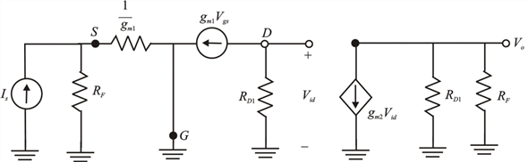
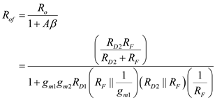
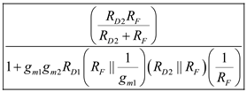

Step 1:
Refer to the circuit diagram of shunt-shunt feedback amplifier in Figure 10.11(c) in the textbook.
Draw the A circuit for the amplifier.

Figure 1
Step 2:
Derive the expression for open-loop trans-resistance A.
The input voltage,
The gate-to-source voltage, 
Write the expression for input voltage .
Substitute for in the equation.
The output voltage is,
Substitute  for
for  in the equation.
in the equation.
Rearrange the terms to obtain the expression for open-loop trans-resistance.

Thus, the open-loop trans-resistance of shunt-shunt feedback amplifier  is
is
.
Step 3:
The feedback factor of shunt-shunt feedback amplifier  is.
is.
Derive the expression for loop gain .
.
Substitute for  and for
and for  in the equation.
in the equation.
Thus, the loop gain of shunt-shunt feedback amplifier  is
is
.
Step 4:
Derive the expression for closed loop gain.

Substitute the determined values in this equation.
Thus the closed loop gain of shunt-shunt feedback amplifier  is
is
.
Step 5:
Derive the expression for input resistance.
Thus, the input resistance of shunt-shunt feedback amplifier  is.
is.
Derive the expression for input resistance with feedback.
Substitute the derived values in this expression.
Thus, the input resistance with feedback of shunt-shunt feedback amplifier  is
is
.
Step 6:
Derive the expression for output resistance.
Thus, the output resistance of shunt-shunt feedback amplifier  is.
is.
Step 7:
Derive the expression for output resistance with feedback.

Thus, the output resistance with feedback of shunt-shunt feedback amplifier  is
is
.